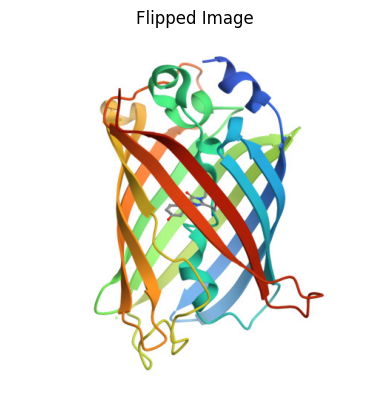
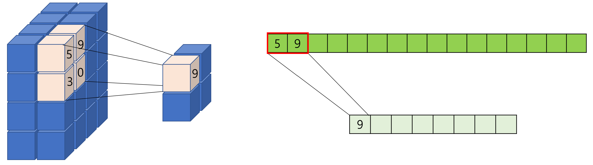
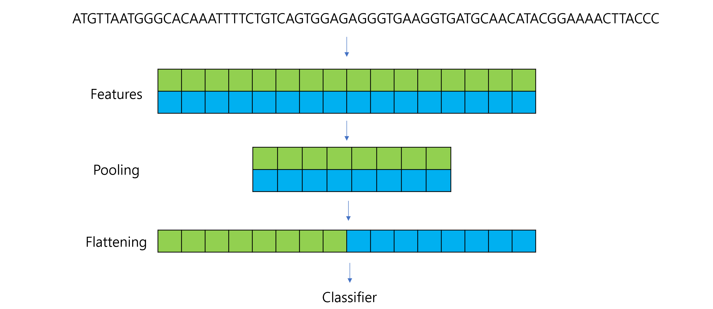

import osimport randomimport numpy as npimport torchdef set_seed(seed: int=42): random.seed(seed) np.random.seed(seed) torch.manual_seed(seed) torch.cuda.manual_seed_all(seed)# CUDNN torch.backends.cudnn.deterministic =True torch.backends.cudnn.benchmark =Falseset_seed(42)print("Seeds are set to 42")
Seeds are set to 42
Convolutional Neural Networks (CNNs) are a type of deep learning model specifically designed for recognizing patterns and spatial hierarchies in data. While traditionally used in image processing, CNNs are also powerful for tasks involving sequential data, such as DNA sequences, because of their ability to detect local patterns.
By the end of this notebook you will be able to:
Understand tensor shapes used in NumPy and PyTorch (3D/4D).
Build a simple 1D CNN to detect DNA motifs.
Reason about stride, padding, pooling, and activations.
Train and evaluate a PyTorch model with basic metrics.
from PIL import Image # For reading and processing imagesimport matplotlib.pyplot as pltimport numpy as npimport torch# Load the imageimage_path ='images/3cbe_model-1.jpeg'# Replace with your image pathimage = Image.open(image_path)# Show basic propertiesprint("Image Size:", image.size) # (width, height)print("Image Mode:", image.mode) # e.g., "RGB"# Display the imageplt.imshow(image)plt.title("3CBE")plt.axis("off")plt.show()
# Flip the image horizontallyflipped_tensor = image_tensor.flip(3) # Flip along the width dimension# Convert back to NumPy for visualizationflipped_image = flipped_tensor.squeeze(0).permute(1, 2, 0).numpy()print(flipped_image.shape)# Display the flipped imageplt.imshow(flipped_image)plt.title("Flipped Image")plt.axis("off")plt.show()
(500, 500, 3)

5.3 Dot products
A fundamental operation in linear algebra that combines two vectors to produce a single scalar value.
It measures how aligned two vectors are and has applications in geometry, physics, and machine learning.
For two vectors \(a = [a_1, a_2, ..., a_n]\) and \(b = [b_1, b_2, ..., b_n]\) in n-dimensional space, the dot product is defined as:
A class that represents your data, providing a way to access samples and their corresponding labels.
We can define a custom dataset by subclassing torch.utils.data.Dataset and overriding:
__len__: Returns the total number of samples.
__getitem__: Retrieves a single sample (data and label) by index.
import torchfrom torch.utils.data import Dataset, DataLoaderimport numpy as npclass SimpleDataset(Dataset):def__init__(self, size):# Generate random x valuesself.x = np.random.rand(size, 1) *10# Shape: (size, 1)self.y =2*self.x +3# Generate labels (y = 2x + 3)def__len__(self):# Total number of samplesreturnlen(self.x)def__getitem__(self, idx):# Retrieve the sample at index `idx` sample = torch.tensor(self.x[idx], dtype=torch.float32) label = torch.tensor(self.y[idx], dtype=torch.float32)return sample, label# Create an instance of the datasetdataset = SimpleDataset(size=100)# Access the first samplesample, label = dataset[0]print("Sample:", sample, "Label:", label)# Check the length of the datasetprint("Number of samples in dataset:", len(dataset))
Sample: tensor([0.6128]) Label: tensor([4.2255])
Number of samples in dataset: 100
5.4.0.2 Dataloader
It provides “Efficient batching of data”, “Shuffling of data to avoid bias”, and “Parallel data loading using multiple workers.”
Batch Processing:
Instead of processing one sample at a time, DataLoader automatically groups samples into batches.
A batch is a mini-collection of samples processed together to compute one gradient step.
Trade-off: larger batch → faster per step and more stable gradients, but higher memory and possible generalization issues; smaller batch → noisier gradients but regularization effect.
Shuffling:
Shuffles the data during training to reduce bias.
Parallel Loading:
Loads data in parallel using multiple workers (num_workers parameter).
Pre-fetching can keep GPUs busy by overlapping data loading with computation.
# Create a DataLoader to handle batchingdataloader = DataLoader(dataset, batch_size=10, shuffle=True)# Iterate through the DataLoaderfor batch_idx, (batch_samples, batch_labels) inenumerate(dataloader):print(f"Batch {batch_idx +1}")print("Samples:\n", batch_samples)print("Labels:\n", batch_labels)break# Show only the first batch
ReLU suppresses noise by removing negatives and emphasizes useful positive responses, improving training stability and representational power.
5.7 Pooling layers
To reduce the spatial dimensions of feature maps. It helps reducing the computational complexity of the network, aggregating features, making the model more robust to small translations or distortions in the input
Types:
Max Pooling: Keeps the maximum value in a window.
Average Pooling: Averages the values in a window.

import torch.nn as nnimport torch.nn.functional as Fclass DNA_CNN(nn.Module):def__init__(self):super(DNA_CNN, self).__init__()# Convolution Layer: 4 input channels, 1 filter, kernel size=5self.conv1 = nn.Conv1d(in_channels=4, out_channels=1, kernel_size=5, stride=1, padding=0)# Pooling Layer: Max Pooling with kernel size=2, stride=2self.pool = nn.MaxPool1d(kernel_size=2)def forward(self, x): x =self.conv1(x) # Convolution x = F.relu(x) # ReLU activation x =self.pool(x) # Max Poolingreturn x# Example DNA sequencesequence, label = dataset[0] # First sampleprint("Input Shape:", sequence.shape) # (4, 20)sequence = sequence.unsqueeze(0) # Add batch dimension (1, 4, 20)print("Shape After Unsqueeze:", sequence.shape) # (1, 4, 20)# Instantiate the model and pass data through itmodel = DNA_CNN()output = model(sequence)print("Output Shape After Convolution:", model.conv1(sequence).shape) # (1, 1, 16)print("Output Shape After Pooling:", output.shape) # (1, 1, 8)
Input Shape: torch.Size([4, 20])
Shape After Unsqueeze: torch.Size([1, 4, 20])
Output Shape After Convolution: torch.Size([1, 1, 16])
Output Shape After Pooling: torch.Size([1, 1, 8])
5.8 Flattening
Converts the multidimensional output of a convolutional or pooling layer into a 1D vector.
This is necessary because the subsequent layers (like fully connected or dense layers) expect inputs to be in a flattened format.

import torch.nn as nnimport torch.nn.functional as Fclass DNA_CNN(nn.Module):def__init__(self):super(DNA_CNN, self).__init__()self.conv1 = nn.Conv1d(in_channels=4, out_channels=2, kernel_size=5, stride=1, padding=0)self.pool = nn.MaxPool1d(kernel_size=2, stride=2)self.fc1 = nn.Linear(1*16, 1) # Fully connected layer (adjust input size)def forward(self, x): x =self.conv1(x) # Convolution x = F.relu(x) # ReLU activation x =self.pool(x) # Max Pooling x = torch.flatten(x, start_dim=1) # Flatten for fully connected layer x =self.fc1(x) # Fully connected layerreturn x# Example DNA sequencesequence, label = dataset[0] # First samplesequence = sequence.unsqueeze(0) # Add batch dimension (1, 4, 20)# Instantiate the model and pass data through itmodel = DNA_CNN()output = model(sequence)print("Input Shape:", sequence.shape) # (1, 4, 20)print("Shape After Convolution:", model.conv1(sequence).shape) # (1, 2, 16)print("Shape After Pooling:", model.pool(model.conv1(sequence)).shape) # (1, 2, 8)print("Shape After Flattening:", torch.flatten(model.pool(model.conv1(sequence)), start_dim=1).shape) # (1, 16)print("Output Shape (Final):", output.shape) # (1, 1)
Input Shape: torch.Size([1, 4, 20])
Shape After Convolution: torch.Size([1, 2, 16])
Shape After Pooling: torch.Size([1, 2, 8])
Shape After Flattening: torch.Size([1, 16])
Output Shape (Final): torch.Size([1, 1])
5.9 Fully Connected Layers
Perform classification or regression based on the extracted features.
Combines all the features detected by earlier layers to predict an output.
5.10 Output Layer
Generate the final prediction.
Activation Functions:
Sigmoid: For binary classification.
Softmax: For multi-class classification.
import torch.nn as nnimport torch.optim as optimimport torchimport torch.nn as nnimport torch.optim as optimclass DNA_CNN(nn.Module):def__init__(self):super(DNA_CNN, self).__init__()self.conv1 = nn.Conv1d(in_channels=4, out_channels=16, kernel_size=3, stride=1, padding=1) # output length: 20 - 3 + 2*1 + 1 = 20self.relu = nn.ReLU() self.maxpool = nn.MaxPool1d(kernel_size=2)self.flatten = nn.Flatten()self.fc1 = nn.Linear(in_features=160, out_features=64) self.fc2 = nn.Linear(in_features=64, out_features=2) def forward(self, x): x =self.conv1(x) x =self.relu(x) x =self.maxpool(x) x =self.flatten(x) x =self.fc1(x) x =self.fc2(x)return xmodel = DNA_CNN()if torch.cuda.is_available(): model.cuda()try:from torchsummary import summary summary(model, input_size=(4, 20)) # (Channels, Length)exceptExceptionas e:print("torchsummary installation error", e)
In PyTorch, gradients are accumulated by default — each call to loss.backward() performs param.grad = param.grad + ∂loss/∂param.
So, optimizer.zero_grad() is used at the start of every iteration to reset gradients, ensuring each batch computes its own independent update without mixing gradients from previous batches.
Loss functions
Loss Function
Typical Use Case
nn.CrossEntropyLoss()
Multi-class classification
nn.BCEWithLogitsLoss()
Binary or multi-label classification
nn.MSELoss()
Regression
nn.L1Loss()
Robust regression
nn.NLLLoss()
Multi-class classification (log-prob inputs)
nn.KLDivLoss()
Distribution divergence
5.11.0.3 Filter visualization
import matplotlib.pyplot as plt# visualize Conv1d filter as motif detectortry:# Note: This is not image data. The dimension of conv1 is (out_channels, in_channels=4, kernel_size)print(model.conv1.weight.shape) conv1_weights = model.conv1.weight.detach().cpu().numpy() # We don't need to squeeze the weight because it's not image dataprint(conv1_weights.shape)exceptExceptionas e: conv1_weights =Noneprint("Couldn't access model.conv1. Please set conv1_weights manually, e.g.:")print("conv1_weights = model.features[0].weight.detach().cpu().numpy()")if conv1_weights isnotNone: plt.figure(figsize=(10,8))for i inrange(min(12, conv1_weights.shape[0])): plt.subplot(3,4,i+1) plt.imshow(conv1_weights[i], aspect='auto', cmap='coolwarm')print(conv1_weights[i]) plt.yticks(range(4), ['A','C','G','T']) plt.title(f'Filter {i}') plt.tight_layout() plt.show()
Positive weights correspond to bases that activate the filter, contributing positively to motif detection.
Negative filter weights in a CNN indicate bases that inhibit activation (they decrease the filter’s response when present).
Negative values show which nucleotide patterns the model has learned to avoid when recognizing motifs.
The simulated motif: CCGGAA
5.11.0.4 Testing
# Create test dataset and dataloadertest_dataset = SequenceDataset(test_data, test_labels)test_dataloader = DataLoader(test_dataset, batch_size=32, shuffle=False)# Evaluate the modelmodel.eval() # Set model to evaluation modecorrect =0total =0all_preds = []all_labels = []val_hist = []with torch.no_grad(): # Disable gradient calculation for testingfor sequences, labels in test_dataloader: sequences = sequences.to(device) # (batch_size, 4, seq_length) labels = labels.to(device).long() # Convert labels to long for CrossEntropyLoss# Forward pass outputs = model(sequences)# Get predictions# torch.max(outputs, 1) returns the maximum value and its index along dimension 1 _, predictions = torch.max(outputs, 1) val_loss = criterion(outputs, labels) val_hist.append(val_loss.item())# Accumulate# item is used to get one element from the tensor and convert it to a Python number correct += (predictions == labels).sum().item() total += labels.size(0) all_preds.append(predictions.cpu()) all_labels.append(labels.cpu())print(f"Test Accuracy: {100* correct / total:.2f}%")# Classification reportfrom sklearn.metrics import classification_reportall_preds = torch.cat(all_preds).numpy()all_labels = torch.cat(all_labels).numpy()print(classification_report(all_labels, all_preds, target_names=["neg", "pos"]))
with torch.no_grad(): disables gradient computation in PyTorch, preventing autograd from tracking operations inside the block.
It’s mainly used during evaluation or inference to save memory (no gradient information in the outputs) and speed up computation since gradients are not needed.
import matplotlib.pyplot as pltfrom sklearn.metrics import confusion_matrix, classification_reportimport numpy as np# --- Loss curve ---plt.plot(train_hist, label='train')plt.plot(val_hist, label='val')plt.xlabel('Epoch')plt.ylabel('Loss')plt.title('Training & Validation Loss')plt.legend()plt.show()# --- Evaluation ---def evaluate(loader): model.eval() y_true, y_pred = [], []with torch.no_grad():for x, y in loader: x = x.to(device) p = model(x).argmax(1).cpu().numpy() y_pred.append(p) y_true.append(y.numpy()) y_true = np.concatenate(y_true) y_pred = np.concatenate(y_pred)print(classification_report(y_true, y_pred, target_names=['neg','pos'])) cm = confusion_matrix(y_true, y_pred) plt.imshow(cm, cmap='Blues') plt.colorbar() plt.title('Confusion Matrix') plt.xlabel('Predicted') plt.ylabel('True')for i inrange(2):for j inrange(2): plt.text(j, i, cm[i, j], ha='center', va='center', color='black') plt.show()evaluate(test_dataloader)
import torch# Check if CUDA is availableif torch.cuda.is_available():print("CUDA is available. Training will be performed on GPU.")else:print("CUDA is not available. Training will be performed on CPU.")print(next(model.parameters()).device)print(sequences.device)print(labels.device)print(f"Allocated GPU memory: {torch.cuda.memory_allocated() /1024**2:.2f} MB")print(f"Cached GPU memory: {torch.cuda.memory_reserved() /1024**2:.2f} MB")
CUDA is available. Training will be performed on GPU.
cuda:0
cuda:0
cuda:0
Allocated GPU memory: 16.57 MB
Cached GPU memory: 22.00 MB
!nvidia-smi
Mon Oct 27 14:09:04 2025
+-----------------------------------------------------------------------------------------+
| NVIDIA-SMI 570.176 Driver Version: 573.57 CUDA Version: 12.8 |
|-----------------------------------------+------------------------+----------------------+
| GPU Name Persistence-M | Bus-Id Disp.A | Volatile Uncorr. ECC |
| Fan Temp Perf Pwr:Usage/Cap | Memory-Usage | GPU-Util Compute M. |
| | | MIG M. |
|=========================================+========================+======================|
| 0 NVIDIA RTX A5500 Laptop GPU On | 00000000:01:00.0 On | Off |
| N/A 61C P8 24W / 80W | 956MiB / 16384MiB | 8% Default |
| | | N/A |
+-----------------------------------------+------------------------+----------------------+
+-----------------------------------------------------------------------------------------+
| Processes: |
| GPU GI CI PID Type Process name GPU Memory |
| ID ID Usage |
|=========================================================================================|
| 0 N/A N/A 88133 C /python3.11 N/A |
+-----------------------------------------------------------------------------------------+
Although storage devices use decimal notation (base-10) for readability, they actually have binary capacities (base-2) at the hardware level.